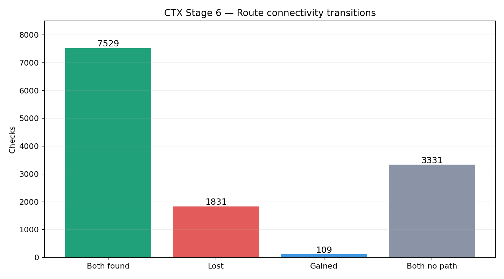
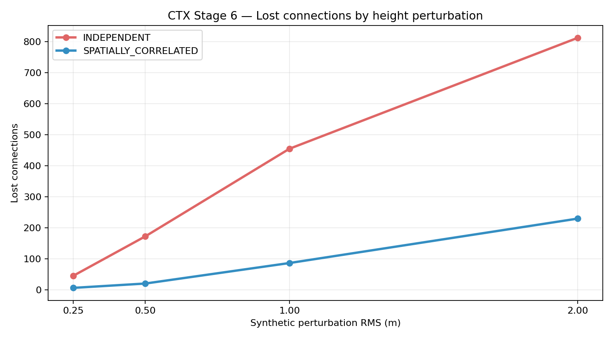
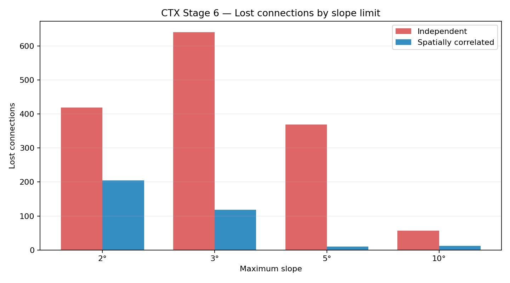
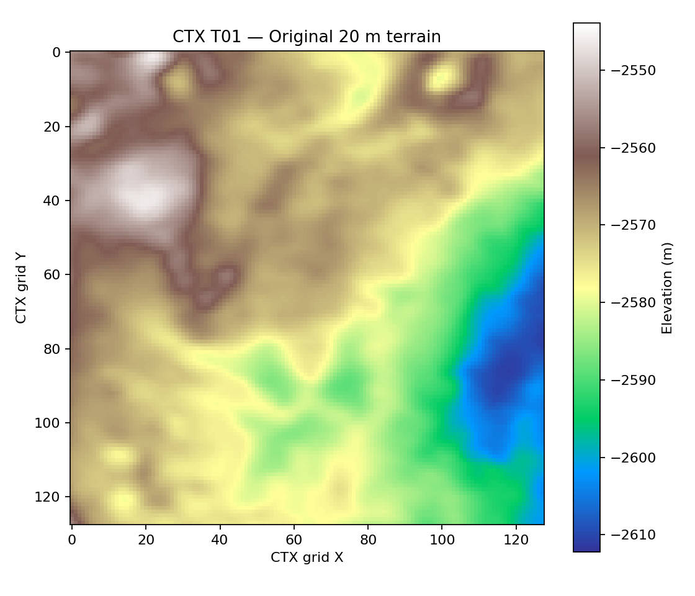

Mars Explorer AI — CTX Research Stage 6
Дослідження чутливості модельних маршрутів до контрольованих синтетичних збурень висот CTX.
Методика
П'ять фрагментів CTX 128 × 128 пікселів із кроком 20 м. Синтетичні збурення RMS 0,25; 0,5; 1 і 2 м. Порівняно незалежний і просторово корельований шум. Для графового моделювання використано чотирисусідні переходи з обмеженнями ухилу 2°, 3°, 5° та 10°.
Вісім контрольних пар початкових і кінцевих точок задані у координатах модельної сітки. Це дослідницькі точки, а не місця посадки чи маршрути марсохода.
Переходи доступності маршрутів
| Status | Checks | Percent |
|---|---|---|
| BOTH_FOUND | 7529 | 58.820 |
| LOST | 1831 | 14.305 |
| GAINED | 109 | 0.852 |
| BOTH_NO_PATH | 3331 | 26.023 |

Вплив амплітуди та просторової структури збурень


| transition | sigma_m | mode | slope_limit_deg | BOTH_FOUND | LOST | GAINED | BOTH_NO_PATH |
|---|---|---|---|---|---|---|---|
| 0.250 | INDEPENDENT | 2 | 114 | 26 | 18 | 242 | |
| 0.250 | INDEPENDENT | 3 | 274 | 16 | 24 | 86 | |
| 0.250 | INDEPENDENT | 5 | 350 | 0 | 0 | 50 | |
| 0.250 | INDEPENDENT | 10 | 386 | 4 | 0 | 10 | |
| 0.250 | SPATIALLY_CORRELATED | 2 | 138 | 2 | 6 | 254 | |
| 0.250 | SPATIALLY_CORRELATED | 3 | 286 | 4 | 12 | 98 | |
| 0.250 | SPATIALLY_CORRELATED | 5 | 350 | 0 | 0 | 50 | |
| 0.250 | SPATIALLY_CORRELATED | 10 | 389 | 1 | 0 | 10 | |
| 0.500 | INDEPENDENT | 2 | 27 | 113 | 1 | 259 | |
| 0.500 | INDEPENDENT | 3 | 242 | 48 | 3 | 107 | |
| 0.500 | INDEPENDENT | 5 | 348 | 2 | 1 | 49 | |
| 0.500 | INDEPENDENT | 10 | 380 | 10 | 0 | 10 | |
| 0.500 | SPATIALLY_CORRELATED | 2 | 125 | 15 | 17 | 243 | |
| 0.500 | SPATIALLY_CORRELATED | 3 | 285 | 5 | 2 | 108 | |
| 0.500 | SPATIALLY_CORRELATED | 5 | 349 | 1 | 0 | 50 | |
| 0.500 | SPATIALLY_CORRELATED | 10 | 390 | 0 | 0 | 10 | |
| 1.000 | INDEPENDENT | 2 | 0 | 140 | 0 | 260 | |
| 1.000 | INDEPENDENT | 3 | 3 | 287 | 1 | 109 | |
| 1.000 | INDEPENDENT | 5 | 333 | 17 | 1 | 49 | |
| 1.000 | INDEPENDENT | 10 | 379 | 11 | 0 | 10 | |
| 1.000 | SPATIALLY_CORRELATED | 2 | 85 | 55 | 15 | 245 | |
| 1.000 | SPATIALLY_CORRELATED | 3 | 267 | 23 | 2 | 108 | |
| 1.000 | SPATIALLY_CORRELATED | 5 | 347 | 3 | 0 | 50 | |
| 1.000 | SPATIALLY_CORRELATED | 10 | 384 | 6 | 0 | 10 | |
| 2.000 | INDEPENDENT | 2 | 0 | 140 | 0 | 260 | |
| 2.000 | INDEPENDENT | 3 | 0 | 290 | 0 | 110 | |
| 2.000 | INDEPENDENT | 5 | 0 | 350 | 0 | 50 | |
| 2.000 | INDEPENDENT | 10 | 358 | 32 | 0 | 10 | |
| 2.000 | SPATIALLY_CORRELATED | 2 | 7 | 133 | 1 | 259 | |
| 2.000 | SPATIALLY_CORRELATED | 3 | 204 | 86 | 3 | 107 | |
| 2.000 | SPATIALLY_CORRELATED | 5 | 344 | 6 | 2 | 48 | |
| 2.000 | SPATIALLY_CORRELATED | 10 | 385 | 5 | 0 | 10 |
Приклад зміни моделі рельєфу CTX
Ділянка T01, синтетичний просторово корельований шум з RMS 1 м. Обидві карти побудовано за однією шкалою висот.

Незалежний аудит
Для вибірки 1 280 випадків результати A* і Dijkstra збіглися за доступністю та вартістю. Геометрія відновлених шляхів перевірена щодо обмежень ухилу: 1 280/1 280 PASS.
Аудит охоплює вибірку, а не всі 12 800 експериментів Stage 6.3.
Походження даних
CTX source SHA-256:
16a1aa66c3f48c1bca252795827db7b417876217aff0f5e1aff18027fab2327bПеревірені архіви Stage 6.2, Stage 6.3 та Stage 6.4 додано до фінального пакета.